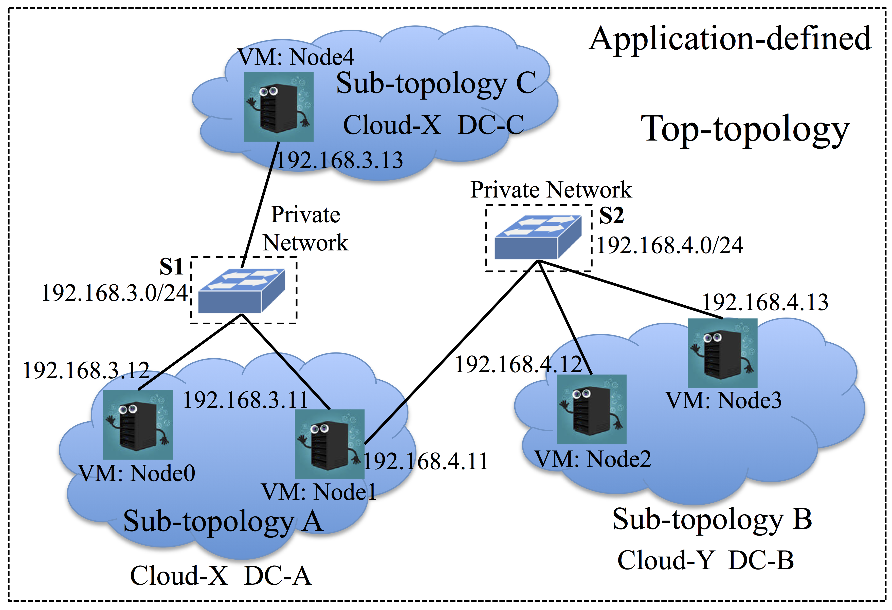

2. Standalone (Get started)¶
The tutorial in this section will teach you how to use CloudsStorm in the way of standalone. We will start with examples to introduce basic functionality of CloudsStorm. This example will show how to leverage CloudsStorm to do data processing with hadoop. Meanwhile, We will describe the basic syntax of user credentials, user databases, infrastructure description and infrastructure code etc, mentioned in the framework overview Overview. The detailed usage of the command line is also demonstrated in this section.
2.1. See the Example¶
There is an example to do data processing with hadoop using ExoGENI Cloud. You can check this example on Github.
2.1.1. Directory structure¶
In this standalone way to use CloudsStorm, every application has its own directory to store all the required components. In this example, it is the directory ExoGENIHadoopTest/. It is called root directory and organized as
-> Infs/ : All the infrastructure descriptions and required information are in this directory.
-> Topology/ : All the infrastructure descriptions are in this directory.
- => _top.yml : This is the top-topology desciption. It describes the entire infrastructure topology at top-level. See Top-topology description.
- => “$sub-topology.yml” : This is a set of files. Every sub-topology is described in a separated file and the file is named after the sub-topology name. See Sub-topology description.
-> UD/ : This directory contains all supported Clouds’ database information, including VM types, computing capacity, data center geolocation, pricing, etc. See Cloud databases
- => db.yml : This is an index file to show how to find the database information for a specific Cloud. See its syntax.
- => “XCloudDB.yml” : This is a set of files describing different Clouds’ information. For each of them, see its syntax.
-> UC/ : This directory contains all supported Clouds’ credentials information. These credentials can be the tokens, key files, which are provided by the user to access Cloud resources. See Cloud credentials.
- => cred.yml : This is an index file to show how to find the credential information for a specific Cloud. See its syntax.
- => “XCloudCred.yml” : This is a set of files storing the user’s credentials information according to different Clouds. For each of them, see its syntax.
-> App/ : This directory contains the infrastructure code and application codes as follows.
- => infrasCode.yml : This is the infrastructure code. It defines how to execute operations on the infrastructures.
- => “application codes” : These are applications logic developed by developers to run on Clouds. In this example, the application program is the ‘WordCount.jar’ to do word count analysis for data processing.
-> Logs/ : This directory is automatically generated after executing the infrastructure code.
- => CloudsStorm.log : This is the general logging output for CloudsStorm framework. It is in the normal format of logging file. The content is not refreshed every time.
- => infrasCode.log : This is the logging output for executing infrastructure code. It is also in YAML format. For the detailed syntax, see syntax details. Every element in this file records the output of the corresponding operation defined in the infrastructure code. It is important to mention that the content is refreshed every time.
Important
- Above files and directories names without double quotations must be exactly the same.
- You do not need to create the directory
Logs/and the files in it. You can check the files after executing of this example here. - The syntax of all the files except
CloudsStorm.logis based on YAML format.
Warning
Credential information is extremely important for a Cloud user. So never make the directory Infs/UC/ containing the real credentials public. For example, push these files onto Github. We are also working on encrypting these files to make it more secure.
Attention
We first make symbols clear for syntax described below.
*represents repeating the element above.$represents this is a variable.'A | B'represents a value can only be selected from ‘A’ or ‘B’.[A]represents the syntax block A is optional.
2.2. Cloud Information Syntax¶
There are two types of Cloud information, Cloud database information and Cloud credential information. They both work as libraries to provide some essential related Clouds’ information when executing the infrastructure code. The difference is that the Cloud database information is public and can be retrieved from different Clouds. The Cloud credential information needs to be provided by CloudsStorm users to access Clouds on their own budget.
For both of them, there is an index file to show where the specific file is. The detailed syntax is as follow.
2.2.1. Cloud databases¶
For basic usage, Cloud databases information are provided. You can skip this part to -> Cloud credentials.
Cloud database information contains detailed information about data centres for selected Clouds. This information includes:
- Geographic positioning of each data centre, which can be leveraged to do locality-aware or data-aware provisioning.
- Endpoint information, which describes a data centre’s controller URL needed for actual provisioning.
- VM types (CPU, memory) supported in each data centre and their characteristic data (e.g. price). This information is not application-defined, but provided by our framework.
The database information index file is named as db.yml. It is in YAML format. For basic usage and current supported Clouds, the syntax is:
cloudDBs:
- cloudProvider: 'EC2 | ExoGENI | EGI'
dbInfoFile: $FileName
- *
$FileName is the file name containing the concrete database information for this Cloud. This file must be in the same folder with the index file. Its syntax is:
DCMetaInfo:
- domain: $DC
endpoint: $ED
country: $Code
longitude: $N
latitude: $N
availability: $N
[extraInfo:
$S1: $S2
*]
VMMetaInfo:
- OS: $OS
CPU: $N (vCore)
MEM: $N (G)
VMType: $Type
Price: $N
DefaultSSHAccount: $S
extraInfo:
$S1: $S2
*
- *
- *
There are two levels of elements here.
The first level is a list of data centre information in the field DCMetaInfo. It consists of following fields.
| domain: | The name of the data centre. It determines how to refer to this data centre in the infrastructure. |
||||||||||||||||
|---|---|---|---|---|---|---|---|---|---|---|---|---|---|---|---|---|---|
| endpoint: | It is usually a URL to determine where to connect to the controller of this data centre to request resources. |
||||||||||||||||
| country: | It indicates where the data centre is. |
||||||||||||||||
| longitude: | It is the rough longitude of the city where this data centre is located. This is useful when choosing data centre with geo-related requirements. |
||||||||||||||||
| latitude: | The rough latitude. |
||||||||||||||||
| availability: | The availability of the data centre indicating the reliability. (Currently not used) |
||||||||||||||||
| extraInfo: | This is a set of key-value pairs. They are user-defined data centre information for advanced usage. |
||||||||||||||||
| VMMetaInfo: | This field contains the second level list. It describes the information of virtual machines (VMs) provided by this data centre.
|
||||||||||||||||
This is an example to express Virginia data centre of EC2 in this syntax.
DCMetaInfo:
- domain: "Virginia"
endpoint: "ec2.us-east-1.amazonaws.com"
country: "USA"
longitude: "78.65 W"
latitude: "37.43 N"
availability: null
VMMetaInfo:
- OS: "Ubuntu 14.04"
CPU: "1"
MEM: "0.5"
VMType: "t2.nano"
Price: "0.0058"
DefaultSSHAccount: "ubuntu"
extraInfo:
AMI: "ami-33e4bc49"
- OS: "Ubuntu 14.04"
CPU: 1
MEM: 1
VMType: "t2.micro"
Price: "0.0116"
DefaultSSHAccount: "ubuntu"
extraInfo:
AMI: "ami-33e4bc49"
2.2.2. Cloud credentials¶
Cloud credential information defines key-value pairs which specify secure tokens needed to access a Cloud or paths of credential files.
The credential information index file is named as cred.yml. It is in YAML format. For basic usage and current supported Clouds, the syntax is:
cloudCreds:
- cloudProvider: 'EC2 | ExoGENI | EGI'
credInfoFile: $FileName
- *
It is similar to the syntax of Cloud database index file. $FileName is the file name containing the concrete credential information for this Cloud. This file must be in the same folder with the index file. The detailed credential information is simple. The syntax is shown below.
credInfo:
$S1: $S2
*
It is basically a set of key-value pairs to determine what kinds of credential information is required for this Cloud. For example, the credential information of EC2 is defined as:
[credInfo:]
accessKey: AERAITY3SDZUQ6M7YBSQ
secretKey: 6J7uog9sfrfd45sa6Gsy5vgb3bdrtrY6hBxt5t9y
The tokens of accessKey and secretKey is filled by the user. Therefore, the resource usage caused by executing the infrastructure code is directly charged by EC2 on the user’s account. There is no broker in between.
The credential information for ExoGENI is defined as:
[credInfo:]
userKeyName: user.jks
keyAlias: keytest
keyPassword: pwdtest
It indicates that the user’s credential for ExoGENI is the key file ‘user.jks’. By default, this is the relative path. The file, therefore, should be in the same folder of this file and named as user.jks. The fields keyAlias and keyPassword are related information to decrypt the key for actual usage. The concrete fields vary among different Clouds.
Actually, some fields’ definition of above Cloud information can be user-defined to support a new Cloud. This is advanced usage, please check Package (Advanced Usage).
2.3. Infrastructure Description Syntax¶
The figure below shows an example topology to demonstrate the partition-based infrastructure management mechanism adopted in CloudsStorm. We classify the application-defined topology description into three levels. The lowest level is the VM level. It describes the types of VMs required, mainly referring to the computing capacities, CPU, memory, etc. The level in the middle is the sub-topology level. It includes descriptions of several VMs in one data centre and also describes the Cloud provider from which this data centre comes from. The top level is the top-topology level. It includes all the sub-topologies and describes the network connections among these VMs. Internally, the network is defined as a private network, being that it is useful for the application to define the topology as such during the design phase. The actual network and geographical information are then transparent to the application. Otherwise, the IP addresses would need to be dynamically configured after provisioning or there must be an orchestrator to broker communications among sub-topologies, because the public IP address for each VM from the public Cloud is different every time. In addition, there is no actual switch placed among VMs but demonstrating how VMs are connected.
2.3.1. Sub-topology description¶
Sub-topology is the low-level description of the underlying infrastructure for running the application. One sub-topology is an entirety of VMs coming from the same data centre of a certain Cloud.
VMs:
- name: $Node
nodeType: $Type
OSType: $OS
script: $Path
[publicAddress: null]
- ∗
| VMs: | It indicates following is a list of VM descriptions. |
|---|---|
| name: | A user-defined node name of this VM. It should be unique in the entire infrastructure, e.g., node1. This will also be the hostname of
this VM. And this VM can be accessed from other connected VMs with this hostname, e.g., ping node1. It is also worth to mention that all
the connected VMs can SSH login each other in a password-free manner, e.g., directly use the command ssh root@node1. This is essential for further deploying PaaS on the infrastructure, such as hadoop, kubernetes, etc. |
| nodeType: | It indicates the computing capacity of the VM, such as t2.small or t2.medium for Cloud EC2. |
| OSType: | It indicates the specific operating system required by the application. The value of above two fields should be supported by the Cloud database information. |
| script: | This is the script path, which is leveraged to install and configure the runtime environment for the application. There are
three types of this string value. For instance, url@ indicates this file comes from
internet, e.g., url@http://www.mydomain.com/pathToFile/; file@ indicates the absolute path of the file, e.g., file@/home/absolute; name@ only indicates the file name
which is in the same folder of this sub-topology description file, e.g., name@relative.sh. |
|---|---|
| publicAddress: | This field can be omitted. After provisioning, you can check the actual public address of this VM from this field. |
2.3.2. Top-topology description¶
Top-topology is the top-level description of the underlying infrastructure for running the application. It describes where sub-topologies are and how they are connected. This file is always named as ‘_top.yml’.
userName: $User
publicKeyPath: $Path
topologies:
- topology: $SubTopology
cloudProvider: $Cloud
domain: $DC
[status: 'fresh | running | deleted | failed | stopped']
- ∗
subnets:
- name: $String
subnet: $subnet
netmask: $netmask
members:
- vmName: $SubTopology.$Node
address: $IP
- ∗
- *
| userName: | It indicates a unified user-defined SSH account name, |
||||||||||||
|---|---|---|---|---|---|---|---|---|---|---|---|---|---|
| publicKeyPath: | The path of the corresponding public key to configure the above SSH user account. Then the user can login to any VM with the
corresponding private key and account. The command is similar with |
||||||||||||
| topologies: | This indicates a list of sub-topologies. Following are the definitions of the fields in one sub-topology element.
|
||||||||||||
| subnets: | This indicates a list of subnets to connect above sub-topologies. Following are the definitions of the fields in one subnet element.
|
2.4. Infrastructure Code Syntax¶
Based on the above application-defined topology description, application developers can further develop the infrastructure code to execute and run their applications on Clouds. The infrastructure code is basically a set of operations defined sequentially in a list. In order to combine these basic operations to complete a complex task, we define two types of code to do the operation, ‘SEQ’ and ‘LOOP’.
[Mode: 'LOCAL | CTRL']
InfrasCodes:
- CodeType: 'SEQ | LOOP'
- ∗
| Mode: | This field tells that how this infrastructure code runs:
If this field is omitted, the default value for |
|---|
Important
When in the mode of ‘CTRL’, there must be a sub-topology called ‘_ctrl’ defined in top-topology. In its detailed sub-topology description, it only needs to contain a small VM to be the control agent. Check the examples.
2.4.1. ‘SEQ’ code syntax¶
‘SEQ’ code only contains one operation. A list of ‘SEQ’ codes is executed one at a time.
- CodeType: 'SEQ'
OpCode:
Operation: 'provision | delete | execute | put | get | vscale | hscale | recover | start | stop'
[Options:
- $S1: $S2
- ∗]
[Command: $String]
[Log: 'on | off']
ObjectType: 'SubTopology | VM | REQ'
Objects: $Object1 [ || $Object2] ...
| CodeType: | This field indicates the type of this code. Currently, there are only two types, ‘SEQ’ and ‘LOOP’. |
|---|
| OpCode: | This field only contains one element, which describes one operation.
|
|---|
2.4.2. ‘LOOP’ code syntax¶
‘LOOP’ code contains several operations and performs repeatedly for a number of iterations or for a certain time period.
- CodeType: 'LOOP'
[Count: $Num]
[Duration: $Time]
[Deadline: $Time]
OpCode:
- Operation: 'provision | delete | execute | put | get | vscale | hscale | recover | start | stop'
[Options:]
- [$S1: $S2]
- ∗
[Command: $CMD]
ObjectType: 'SubTopology | VM | REQ'
Objects: $Object1 [ || $Object2] ...
- *
The difference with the above ‘SEQ’ code is that there are three fields to control the loop and field OpCode defines a set of operations instead of one. Controlling conditions are determined by following three fields.
| Count: | This is defined as a maximum number of iterations for this loop. |
|---|---|
| Duration: | This is defined as the maximum amount of time for executing in this loop. |
| Deadline: | This is defined as a certain timing to exit this loop. |
The meaning of other fields is the same as above ‘SEQ’ code syntax.
2.4.3. Some system variables¶
There are some system variables defined in the syntax of infrastructure code. You can use these strings in some commands or options to simply represent some system variables. The actual part of the string in the command or option text will be replaced with the real variable value.
$counter: This is used in a loop. It will be replaced by the actual count number in the loop.$time: It indicates the current Unix timestamp.$cur_dir: The absolute path of the current directory, where this infrastructure code is.$root_dir: The absolute path of the root directory, which refers to this entire file structure.
2.5. Logs Syntax¶
Note
For basic usage, you do not need to learn this part. They will be generated automatically.
There are two types of logs, the log of CloudsStorm framework and the log of executing infrastructure code. For basic usage, you only need to know the latter one. The log of the infrastructure code is also in YAML format. Each operation defined in the infrastructure code above will generate one element of record and add to the logging file. This is the syntax.
LOGs:
- Time: $Time
Overhead: $Time
Event:
Operation: 'provision | delete | execute | put | get | vscale | hscale | recover | start | stop'
Command: $CMD
[Options:]
- [$S1: $S2]
- ∗
Log: 'on | off'
ObjectType: 'SubTopology | VM | REQ'
Objects: $Object1 [ || $Object2] ...
LOG:
MSG: $String
$Object1: $String
*
- *
| Time: | This field records when this operation happens. It is in the format of Unix timestamp. |
||||||||||
|---|---|---|---|---|---|---|---|---|---|---|---|
| Overhead: | This is the overhead of this operation. It records the time duration from starting to finishing this operation. It is in the unit of millisecond. |
||||||||||
| Event: | This field records the operation element, which generates this log. The syntax is the same as the |
||||||||||
| LOG: |
|
||||||||||
2.6. Command Lines¶
For basic usage, before running these command lines to execute your infrastructure code, you need to know how to define your infrastructure topology and write your infrastructure code. Then you can go on with following command lines.
- java -jar CloudsStorm.jar execute srcDir
- This command is used to execute the infrastructure code in the directory of
srcDir, which is the root directory of the entire file structure described above. - java -jar CloudsStorm.jar run srcDir
- This command is used to execute the infrastructure code in the directory of
srcDir, but only in ‘LOCAL’ mode. This is useful when you want to restart executing the infrastructure code from a control agent. - java -jar CloudsStorm.jar delete srcDir all/ctrl
- This command is used to delete some extra resources. When the option is ‘all’, this command deletes all the resources except the controlling agent. When it is ‘ctrl’, this command deletes all the resources including the controlling agent.